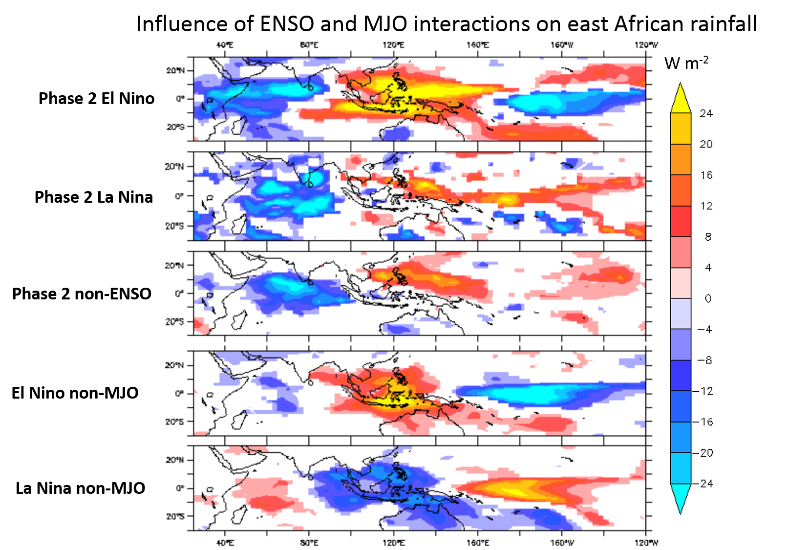
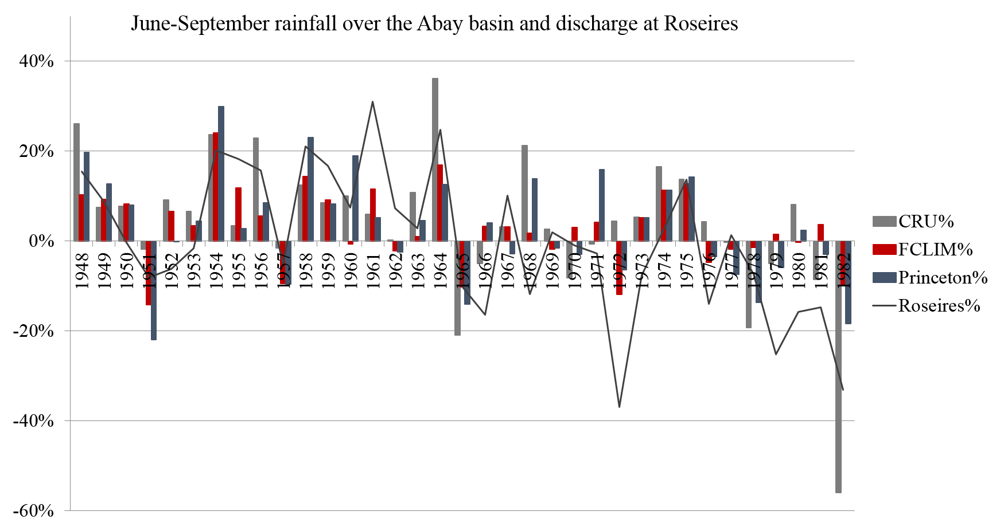
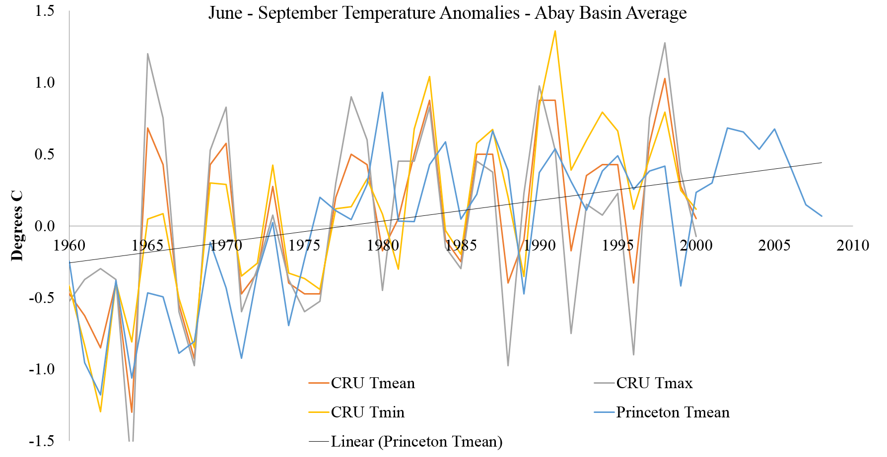
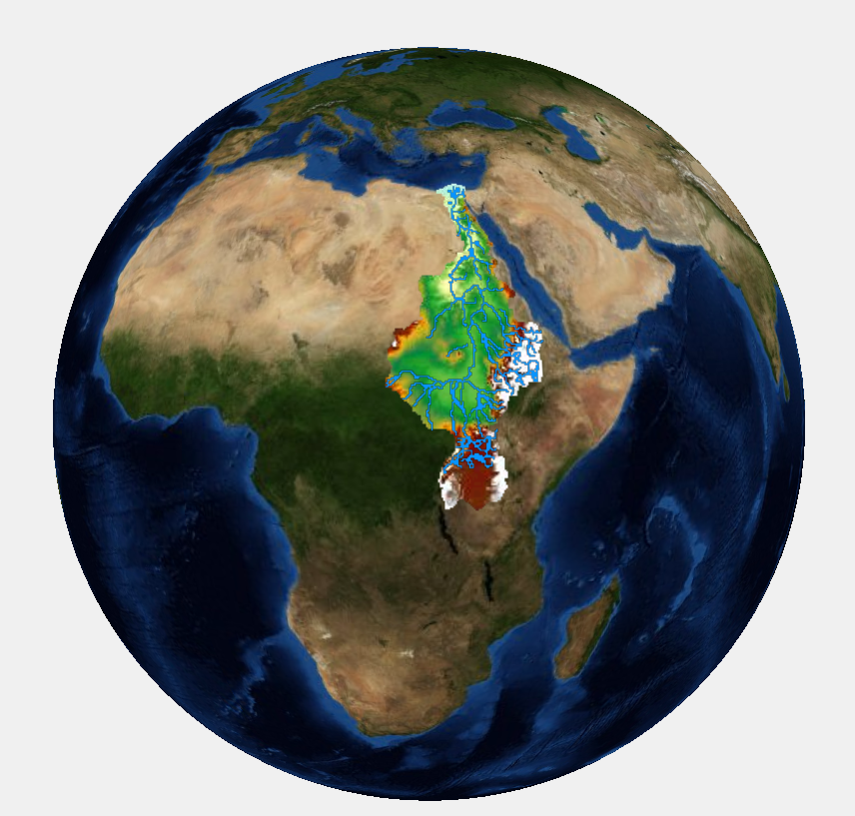

Semi-automated rainfall prediction models for any geographic region using R (Shiny)
Sub-seasonal analysis of rainfall over the Blue Nile River basin
Impacts of the interactions of the Madden-Julian Oscillation, El Niño Southern Oscillation and Indian Ocean Dipole on East African rainfall
The Madden-Julian Oscillation, wave dynamics and convection over West Africa
Impacts of the Madden-Julian Oscillation over East Africa
Rapid Climate Assessment Of the Abay Basin: Current Conditions and Projections Through 2025
Model based assessment of potential impacts of climate change on the flow the Nile River
Semi-automated rainfall prediction models for any geographic region using R (Shiny)
This is an interactive R-Package, built using shiny, HTML, CSS and JavaScript, that helps to predict rainfall over any geographic region of interest. The user can extract predictand by drawing a polygon over a region. They can also upload time series rainfall data. Then, they select data sets to extract features from. The user has the option to select sea surface temperature, sea level pressure, winds at different pressure levels, air temperature at various pressure levels, and geopotential height at different pressure levels. They can also upload their own predictors. The package generates correlations of the variables selected with the predictand. The user also has the option to generate composites of the variables, which is useful to catch non-linear relationships, based on the predictand. Next, the user can extract predictors by drawing polygons over the regions that show strong correlations (composites). Then, the user can select some or all of the machine learning algorithms provided. Provided models include Linear regression models (GLM, SGLM), Tree-based ensemble models (Random Forest and Boosting), Support vector Machines, Artificial Neural Network, and other non-linear models (GAM, SGAM, MARS). Finally, the user can download the analysis steps they used, such as the region they selected, the time period they specified, the predictand and predictors they chose and preprocessing options they used, and the model results in PDF or HTML format. The video below is a quick demo.
Server.R and ui.R codes are on GitHub
This app has been submitted to the Earth and Space Science Informatics group of the American Geophysical Union for the fall 2015 meeting.
This work originated from a course project that I did to generate long term climatology and trend of rainfall and temperature over any selected region in Africa (Slidify presentation here and the app is on RStudio).
Top
Madden-Julian Oscillation (MJO) mediated mechanism to explain El Niño Southern Oscillation (ENSO) and Indian Ocean Dipole (IOD) impacts on East African rainfall

Berhane et al (in prep)
Methods used:
Principal component analysis, Clustering, Time-lagged Linear Regression, Hypothesis Testing, Wavenumber-Frequency Spectral Analysis, Composite analysis, Filtering, et cetera.
Top
The Madden-Julian Oscillation, wave dynamics and convection over West Africa
Methods used:
Principal component analysis, Clustering, Time-lagged Linear Regression, Hypothesis Testing, Wavenumber-Frequency Spectral Analysis, Composite analysis, Filtering, et cetera.
Top
Impacts of the Madden-Julian Oscillation over East Africa

Berhane and Zaitchik, 2014
Methods used:
Time-lagged Linear correlation, Hypothesis Testing, Composite analysis, et cetera.
Top
Sub-seasonal analysis of rainfall over the Blue Nile River basin

Correlations of Blue Nile June precipitation with geopotential height at various pressure levels
Berhane et al. 2014
Methods used:
Various Prediction Models (Generalized Linear Model, Random Forest, Boosting, Generalized Additive Models, Bayesian Additive Regression Trees, Classification and Regression Tree, Bagged Categorical and Regression Trees, Multivariate Adaptive Regression Splines), Correlation Analysis, Hypothesis Testing, Composite analysis, Principal Component Analysis, et cetera.
Top
Rapid Climate Assessment Of the Abay Basin: Current Conditions and Projections Through 2025
Prepared for the Ethiopian Environmental Protection Authority (summer 2011)


Top
Model based assessment of potential impacts of climate change on the flow of the main headwaters of the Nile River: Equatorial Lakes Region and Blue Nile Basins

Summary:
Built and evaluated a physically-based hydrological model that predicts river flow. Further, examined possible impacts of climate change on the Nile River flow using different climate scenarious.